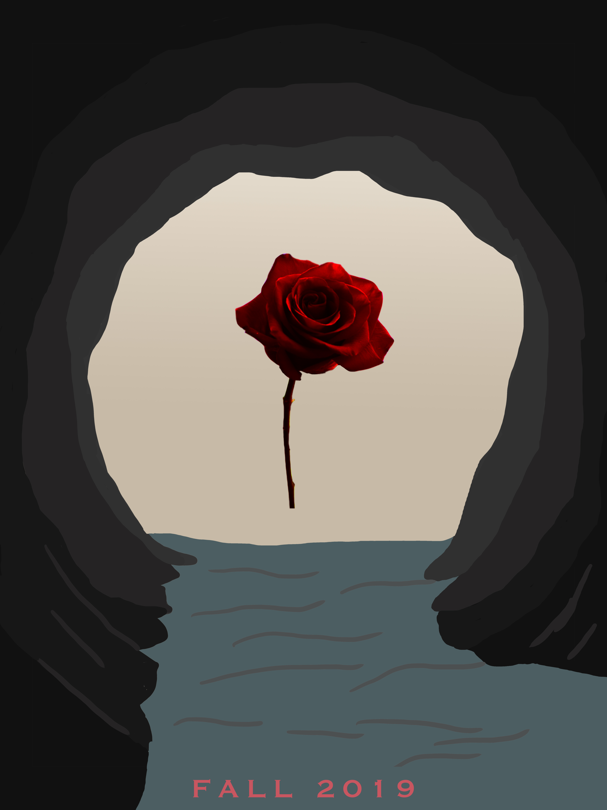
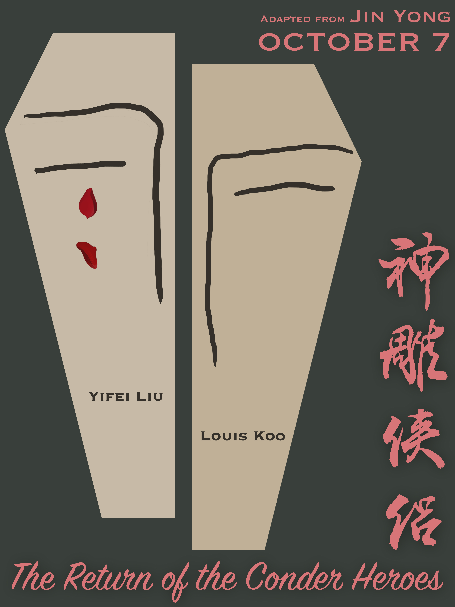

These are posters designed for a Chinese fiction novel called The Return of the Conder Heroes (神雕侠侣). The left one serves as a teaser poster while the right one is the full version.
I focuses on the "love flower" (情花) element from the book, which sets apart the two protagonists for a long time because of its toxicity. Becuase it is love that leads the two protagonists to leave the cave they used to live in and to the outside world; but it's also love that brings all the grief and sorrow.